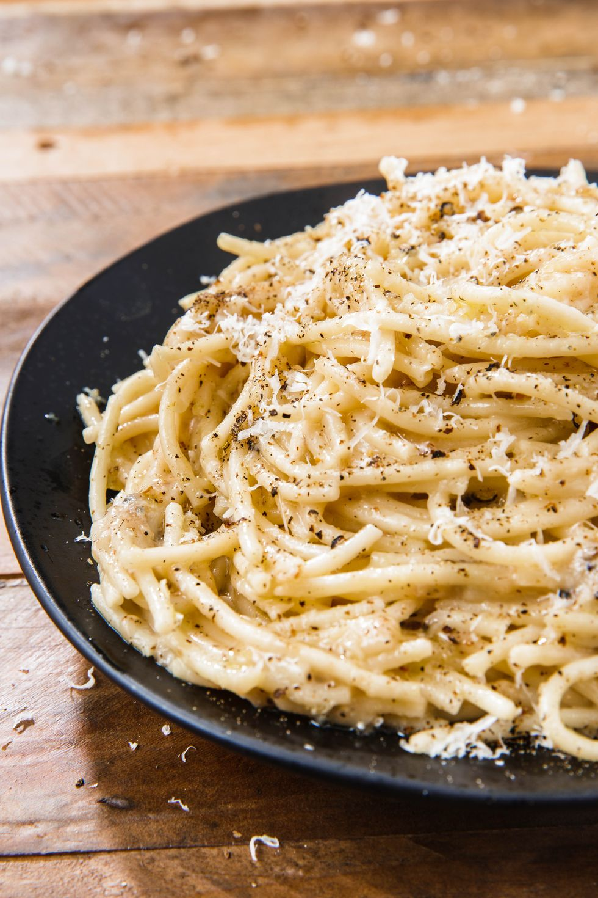

Cacio e Pepe

A simple recipe that is most certainly hard to master. The simple combination of parmesan and black pepper
makes a pasta dish to die for.
Ingredients
- 8 oz. pasta
- 2 tbsp. butter, divided
- 1 tbsp. extra-virgin olive oil
- Coarsely ground black pepper
- 3/4 c. freshly grated Pecorino, plus more for garnish
- 3/4 c. freshly grated Parmesan, plus more for garnish
Steps
- In a pot of boiling salted water, cook pasta until al dente. Reserve 2/3 cup pasta water and drain pasta.
-
In a large skillet over medium heat, melt 1 tablespoon butter with oil. Add a generous amount of black
pepper and toast until fragrant, about 1 minute.
-
Add 1/3 cub reserved pasta water and bring to simmer. Whisk in remaining butter then, using tongs, toss
pasta into butter mixture.
-
Add cheeses and toss constantly until cheese is melty, removing skillet form heat when about half the
cheese has melted. (If sauce is too thick, loosen with more pasta water.)